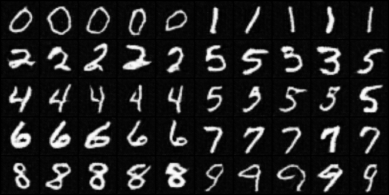

Experiment on class-conditioned DCGAN
GAN (generative adversarial network) has gained increasing popularity in recent days. In this mini-project, we explored a typical GAN setup, called DCGAN (deep convolutional GAN) for training an image generator. In contrast to the traditional vanilla GAN, which has network using multi-layer perceptrons as building blocks, the DCGAN train both the discriminator and the generator using convolutional networks. In addition to this architecture, we append class condition information to the whole training process in order to have a generator which is able to control the image randomness. A detailed report for the experiment can be found below.

SEMI-SUPERVISED LEARNING ON MNIST
HANDWRITTEN DIGIT RECOGNITION
Supervised learning is usually the easiest and desirable learning method for training a model. However, it is always costly to have labeled data. As a result, unsupervised learning becomes more attractive for handling large but label-free datasets. In this mini project, we still wanted a supervised model for the final classification task, but utilized a semi-supervised approach to enhance the model from unlabeled data. A detailed report for the model architecture can be found below.

Predict and Quantify Development Influence
The real estate market is a key pillar industry in large cities. From everyday experience, high property values often indicate prosperity in the area. Many economists and researchers have worked on finding and analyzing factors which have impacts on the integrated view of the economic development. Yet many of the previous work focused on forecasting the housing price, while our work presented here is to make a detour to find underlying potential building attributes which give a newly introduced development power to exert an impact to its nearby real estate market in Manhattan, New York. We applied different basic machine learning models such as logistic regression(LR), support vector machine (SVM), random forest (RF), Naive Bayes (NB) and AdaBoost(Ada) to find if the approach using only real estate properties’ attributes as factors would generate reasonable predictive models.

Automated Question Answering System based on Multiclass Prediction of Yahoo!Answers
One of the major purposes of Internet is that people can use search engines to look up answers to their questions. In this project, we implemented a simple question answering system by applying multi-class prediction on the Yahoo!Answers dataset. For a simple and manageable approach, we decided to use only the top four frequently asked categories in the dataset. Then we trained a set of different multi-class models for the task.

Analysis of Interaction between Newly Introduced Taxi Modes and Yellow Taxi in NYC
As a major trade center in the United States, New York City's convenient transportation is essential for people living in such a fast-paced lifestyle. Yellow taxi, a major means of transportation in NYC, has been widely used by people for many years. However, as new modes of transportation being introduced, such as green taxi and Uber, people's preference of taxi mode has changed. We found that although yellow taxis still dominate the market of vehicle for hire, green taxis and Uber taxis hold an incline to prosperity.
Twitter Sentiment Analysis: Predicting TV Show Renewal
In this project, we take a dataset of 1.6 million tweets published between April 17th, 2009 and May 27th, 2009. In a previous analysis, each of these tweets have been given a polarity score corresponding to that tweet’s sentiment. In our project, we train several models to try to predict that sentiment through the tweet’s text content. After finding an optimal candidate model, the tweets mentioning television shows of interest are gathered. The results of the sentiment analysis on these TV show tweets are then fed through a new model. This model attempts to determine if positive twitter sentiment can predict whether or not a television show is renewed the following season.